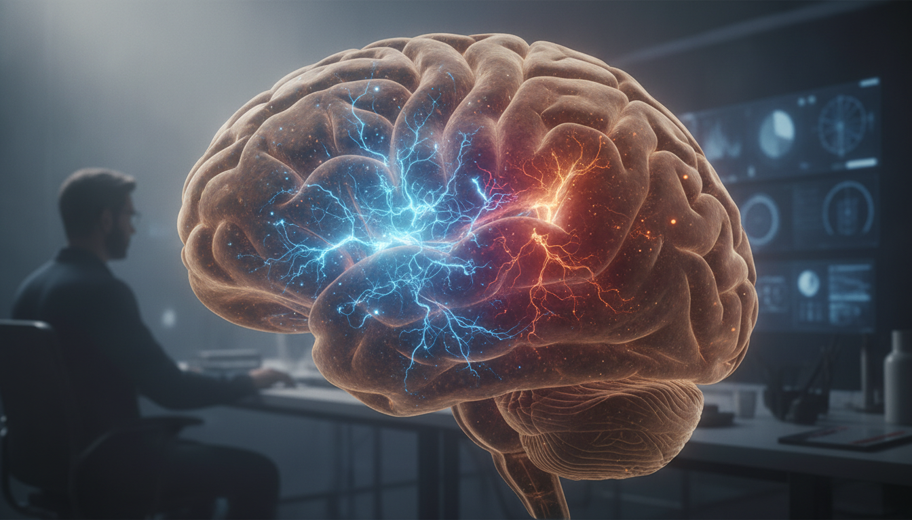

The Sudden Fade: What Micro-Sleep Costs
You're two hours from the end of a 0100 to 1300 shift. The cardiac monitor blips, the road stretches, the patient's chart waits. Then, a blank. The world vanishes for a few seconds. This is micro-sleep: your brain's primal need for sleep crushes specific neural networks, forcing them into a localized, sleep-like shutdown, even as other parts fight to stay awake. Night shifts drive significantly higher accident and injury rates, a risk that escalates during extended 12-hour shifts. Even short naps sharpen alertness and visual signal response late in a shift, a 1998 *Journal of Sleep Research* study found. This highlights how precarious your edge can become. The cost of this fight is stark: proactive strategies like 'sleep banking' maintain performance effectiveness at 88.6%, against 80.9% for less prepared approaches, a 2023 *Journal of Clinical Sleep Medicine* report shows. That 8% gap? It's the difference between a clean call and a critical error.Can You 'Bank' Sleep Against the Clock?
That 8% gap is the difference between a clean call and a critical error. How do you seize that 88.6% performance effectiveness? You start with a deliberate strategy: sleep banking. Sleep banking means intentionally extending your sleep in the days before a block of night shifts. Forget one extra hour; this is a systematic push to add 60-90 minutes to your sleep for several nights before you start working against your natural clock. Your body's homeostatic sleep drive acts like a battery, constantly building a need for sleep the longer you're awake. Bank sleep, and you overcharge that battery, building a crucial reserve against the inevitable sleep debt night work demands. A study on medical residents confirmed this proactive approach. Those who banked sleep held 88.6% performance effectiveness during their night shifts, significantly higher than the 80.9% seen in those who did not, a 2023 *Journal of Clinical Sleep Medicine* study reported. This pre-loading of sleep won't eliminate sleep debt, but it forges a vital buffer, softening the impact of acute sleep deprivation and delaying the strike of dangerous micro-sleep episodes.Immediate Reset: Snapping Out of the Fade
When the fade hits mid-shift, you need an immediate physiological interrupt. A short nap, under 60 minutes, is your fastest reset. Naps this brief significantly boost visual signal response and overall alertness during the latter half of a night shift, a 1998 *Journal of Sleep Research* study revealed. Combine it with caffeine for a "Nappuccino": drink coffee immediately before a 20-30 minute nap. Caffeine hits your system in about 20 minutes. You wake as the stimulant kicks in, delivering a powerful, rapid boost. This strategy works *with* your homeostatic sleep drive. Beyond napping, deploy light and movement. Step into bright, blue-enriched light for a few minutes. This exposure actively crushes melatonin production, signaling your brain to stay awake, countering circadian rhythm disruption, a 2025 systematic review confirms. Follow this with brief, vigorous physical activity – a quick set of push-ups, a brisk walk down a corridor, a few dynamic stretches. This burst of autonomic arousal is an immediate physiological reset. It interrupts the localized sleep-like activity that defines micro-sleep. These are precise, on-the-spot interventions to regain control when your body tries to shut down.
Elite Alertness: What Pilots and Surgeons Actually Do
Immediate physical resets help, but high-stakes roles demand a proactive defense against mental fade. Professionals in fields like aviation and surgery don't just power through; they deploy structured approaches that maintain elite alertness, moving beyond conventional methods. One core strategy involves structured relaxation. Techniques like the 'Military Sleep Method' rapidly calm the mind and body, shifting brain wave patterns away from the early stages of fatigue. This intentional mental reset blocks the brain fog that invites micro-sleep. Another critical tool is strategic bright light exposure. During the early hours of a night shift, high-intensity light suppresses melatonin, effectively commanding the body's internal clock to stay alert. A systematic review found light therapy the most effective intervention for rotating night shift workers, showing a substantial impact on sleep outcomes (Hedges' g = 0.57), a 2023 systematic review and meta-analysis reported. This approach, alongside blue-enriched light, consistently boosts alertness and sleep quality for night shift healthcare workers, a 2025 systematic review found. Finally, these professionals understand the danger of monotony. Actively rotating tasks or engaging in brief, stimulating conversations prevents the brain from settling into predictable, low-stimulus patterns – an open invitation for micro-sleep. It's about leveraging the brain's need for novelty, not fighting it.Beyond the Moment: Sustaining Alertness Through the Shift
Preventing micro-sleep moments is one battle; winning the war against cumulative fatigue across an entire shift demands a different set of tactics. Sustained vigilance requires you to proactively manage your circadian rhythm and homeostatic sleep drive. To combat circadian rhythm disruption, expose yourself to bright light during the early and middle parts of your shift. This significantly boosts alertness and improves sleep quality after the shift; a 2025 systematic review found light consistently helpful for night shift healthcare workers. Light therapy was the most effective intervention for sleep outcomes in rotating night shift workers, a 2023 systematic review and meta-analysis confirmed. Planned short breaks, even just 5-10 minutes of movement or focused breathing, act as mini-resets for your homeostatic sleep drive. Maintain hydration and smart nutrition. Avoid heavy, high-sugar meals that trigger energy crashes and disrupt cortisol regulation. For long-term fatigue management, foundational cognitive behavioral approaches—focusing on sleep hygiene and stress reduction—forge a reliable path forward, proving effective in trials, a 2023 systematic review and meta-analysis concluded.Your Tactical Alertness Checklist
Pre-Shift Preparation
- Build a Sleep Bank: Add 1-2 hours of sleep per night for 2-3 days before your night shift block. This buffers against inevitable sleep loss.
- Nappuccino Protocol: Consume 200mg of caffeine, then immediately take a 20-minute nap. Wake as the caffeine begins to take effect, a 1998 *Journal of Sleep Research* study advises.
In-Shift Response
- Bright Light Strategy: Early in your shift, use a 10,000 lux bright light source for 20-30 minutes to suppress melatonin and reinforce wakefulness, a 2025 systematic review suggests.
- Physical Micro-Resets: Every 60-90 minutes, stand, stretch, or walk for 2-5 minutes to reactivate your body and mind.
- Hydrate and Fuel Smart: Sip water constantly. Choose protein and complex carbohydrates over sugary snacks to maintain stable energy and avoid crashes.
- Military Method: If you feel a fade, employ a 2-minute relaxation technique to clear your mind and relax muscles, refocusing your attention, a 2023 *Journal of Clinical Sleep Medicine* study shows.
Sources
- J Sleep Res (PubMed) (1998)
- J Clin Sleep Med (PubMed) (2023)
- Systematic Review (PMC) (2025)
- Systematic Review & Meta-analysis (PMC) (2023)
This is not medical advice. Talk to your provider.
The clock's demands are fixed. Your fight against them is not.